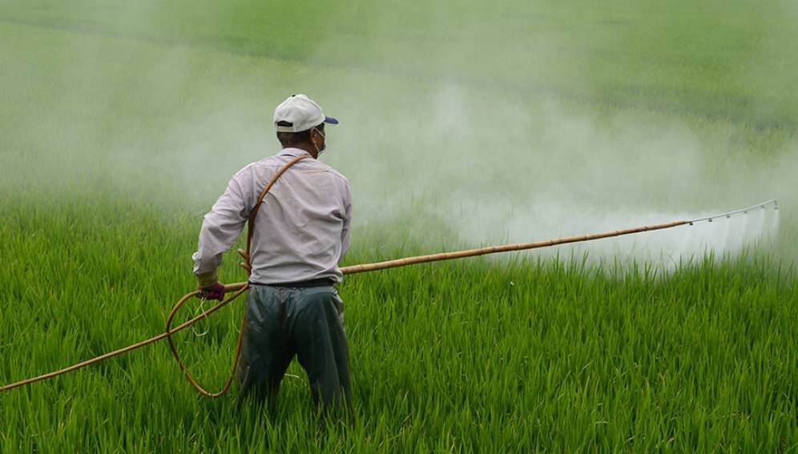

Toxic Tango

Description
With its bold, chemical flavors and unmistakable tang of greed, Toxic Tango is a dish that's hard to resist.
With industrial agriculture's efficiency and profitability prioritized over environmental and health impacts, we're setting ourselves up for a future of sickness and environmental devastation. So go ahead, take a dip in Toxic Tango, but be prepared for the consequences.
Ingredients
- Pesticides, herbicides, and other toxic chemicals
- Industrial agriculture
- Greed
- Ignorance
Steps
- Sprinkle pesticides, herbicides, and other toxic chemicals liberally on crops and into the soil.
- Prioritize industrial agriculture's efficiency and profitability over the environmental and health impacts of these chemicals.
- Ignorantly ignore the fact that these chemicals are harming our soil, water, and air, as well as the health of the animals and humans who consume these crops.
- Repeat until our food and environment are so contaminated that they are no longer habitable.